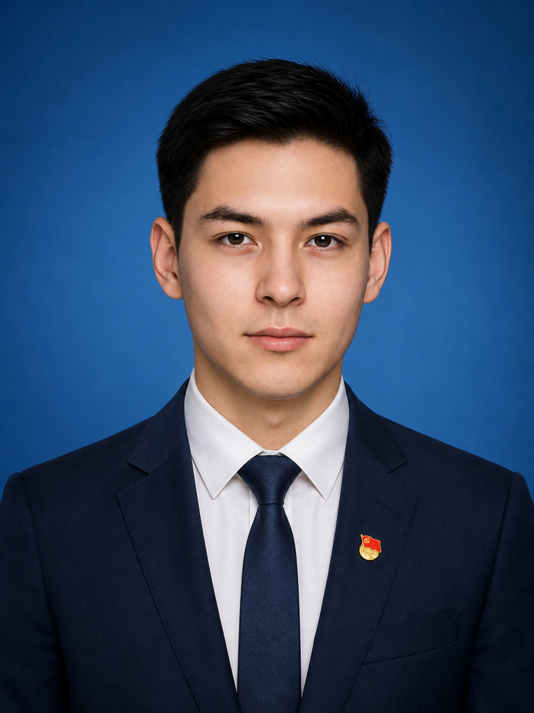
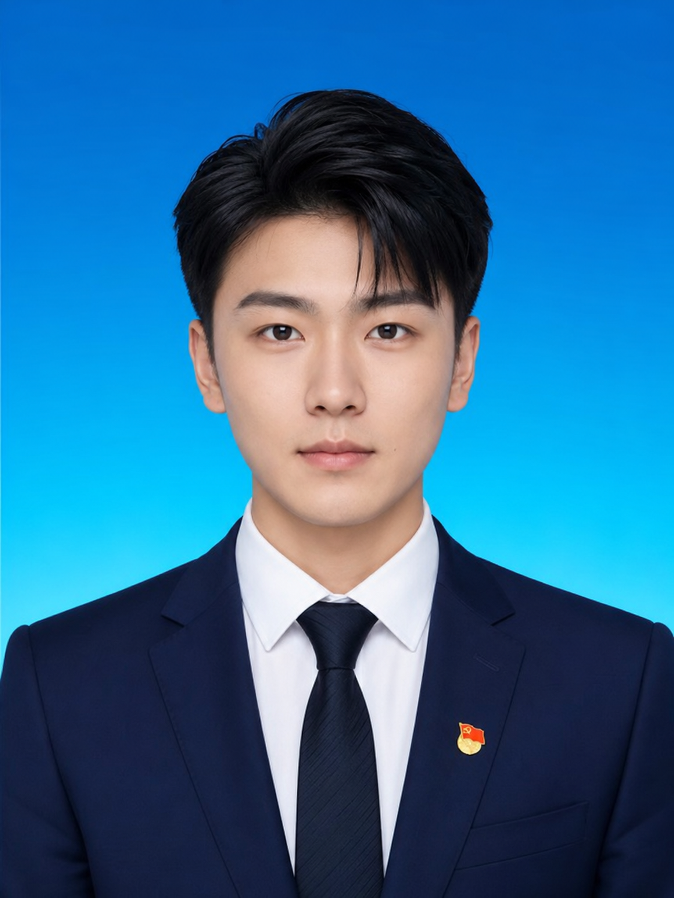
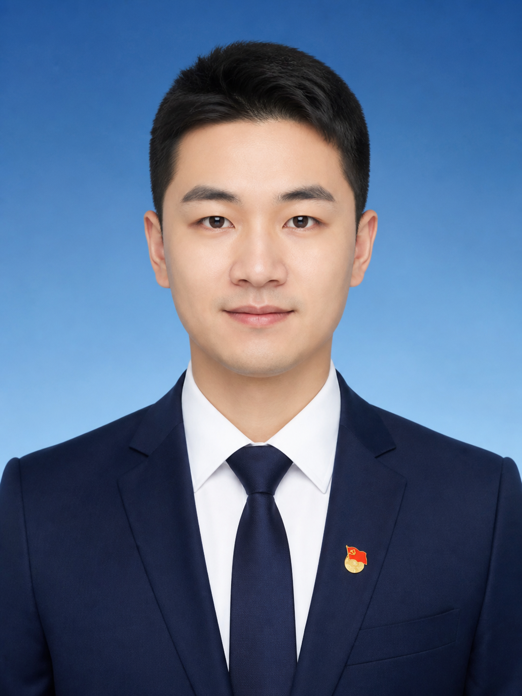
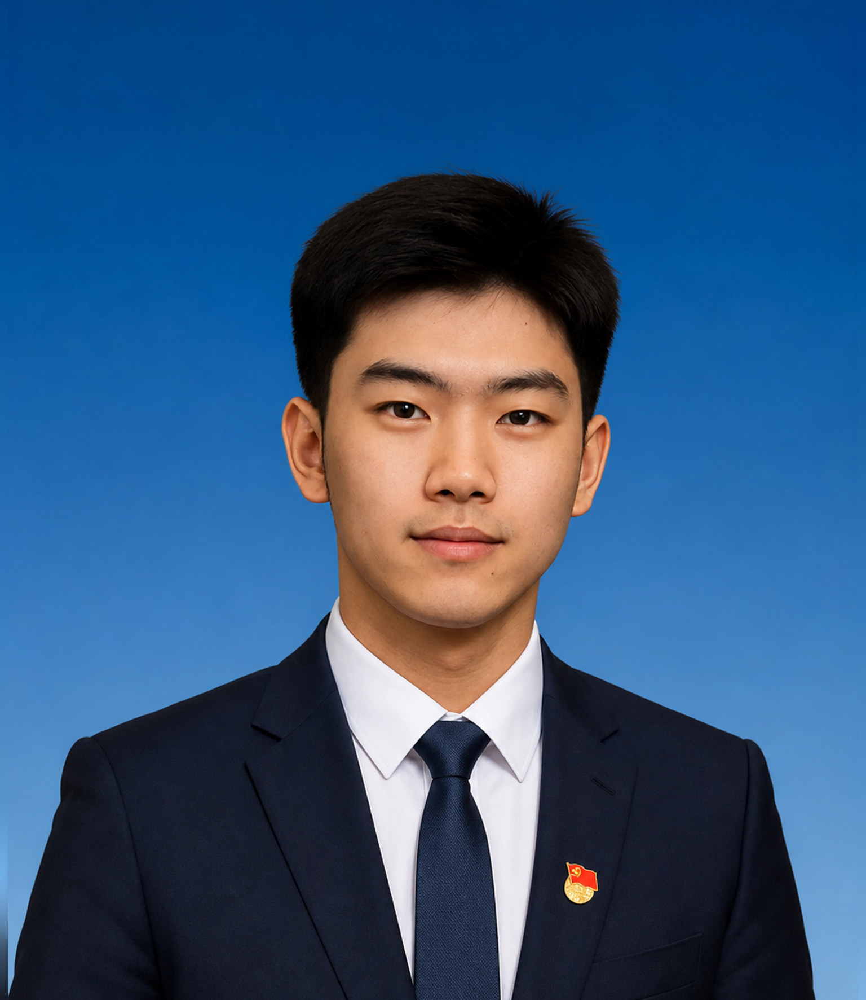
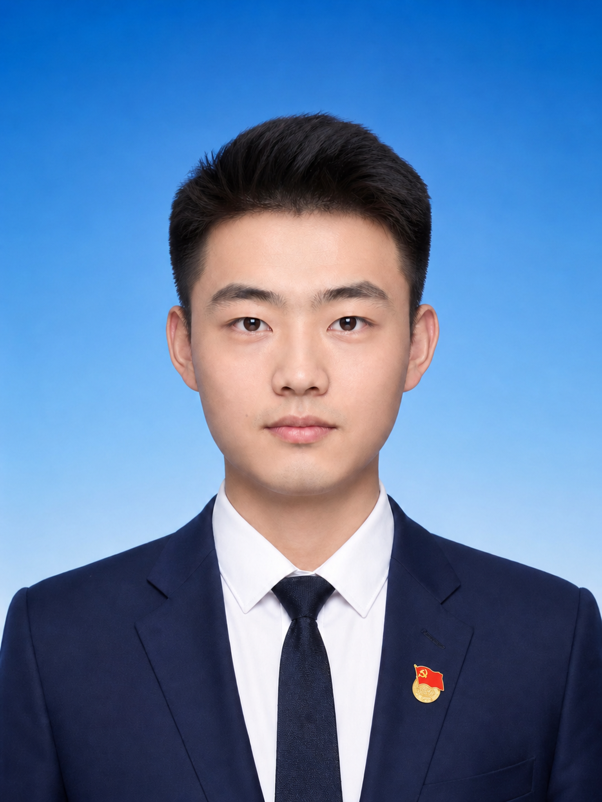

吴01
书记 · 常务委员会委员
吴晨

- 基本简历
- 男，汉族，1997 年 6 月出生，研究生学历，中共党员。
- 工作分工
- 主持在华工作流程，分管管理、投资与运营。
ORGANIZATION
截至 2026 年 8 月 · 电报科技（中国）管理团队信息
CURRENT MEMBERS
以下为当前公开的岗位信息与工作分工。
书记 · 常务委员会委员

副书记 · 常务委员会委员

书记 · 常务委员会委员

副书记 · 常务委员会委员

常务委员会委员
